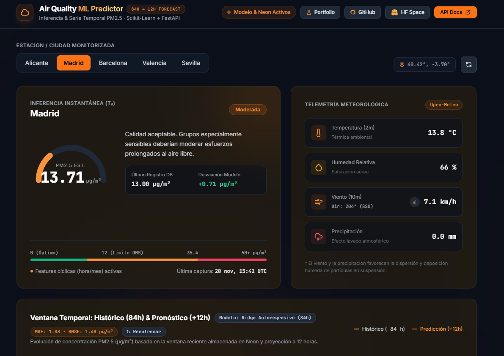

Hola, soy Javier
Junior Data Scientist & ML Enthusiast
De pequeño ya decía que quería dedicarme a resolver problemas. Hoy, como data scientist, los modelos predictivos y el Machine Learning me permiten ir un paso más allá: encontrar respuestas y soluciones en datos donde a priori parecía imposible verlas.

Stack & Habilidades
Herramientas y metodologías aplicadas en mis pipelines de datos.
Machine Learning
Modelado supervisado, métricas de evaluación y tuning.
Python & SQL
Ingesta, limpieza y consultas complejas de bases de datos.
Data Viz & EDA
Storytelling visual para stakeholders técnicos y de negocio.
MLOps & Herramientas
Buenas prácticas, control de versiones y despliegue modular.
Proyecto Destacado
Desarrollo End-to-End desplegado en producción con código limpio.

Air Quality ML API
Predicción y monitoreo de calidad del aire mediante Machine Learning
Descripción & Impacto:
Pipeline completo de Machine Learning puesto en producción como API REST. Permite realizar predicciones en tiempo real sobre indicadores de calidad del aire a partir de variables ambientales y meteorológicas, facilitando la toma de decisiones preventivas y el acceso programático al modelo mediante documentación interactiva (Swagger UI).
¿Tienes un proyecto o vacante en mente?
Estoy buscando activamente integrarme en un equipo donde aportar valor mediante análisis de datos y seguir acelerando mi aprendizaje.